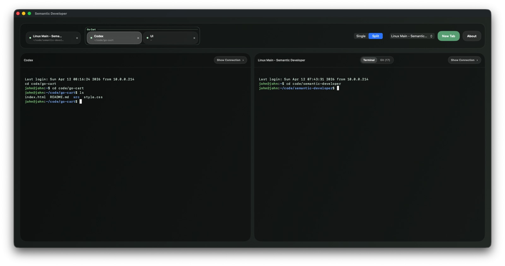
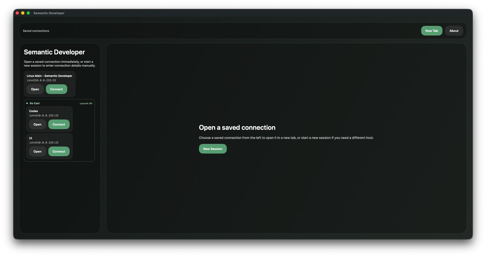
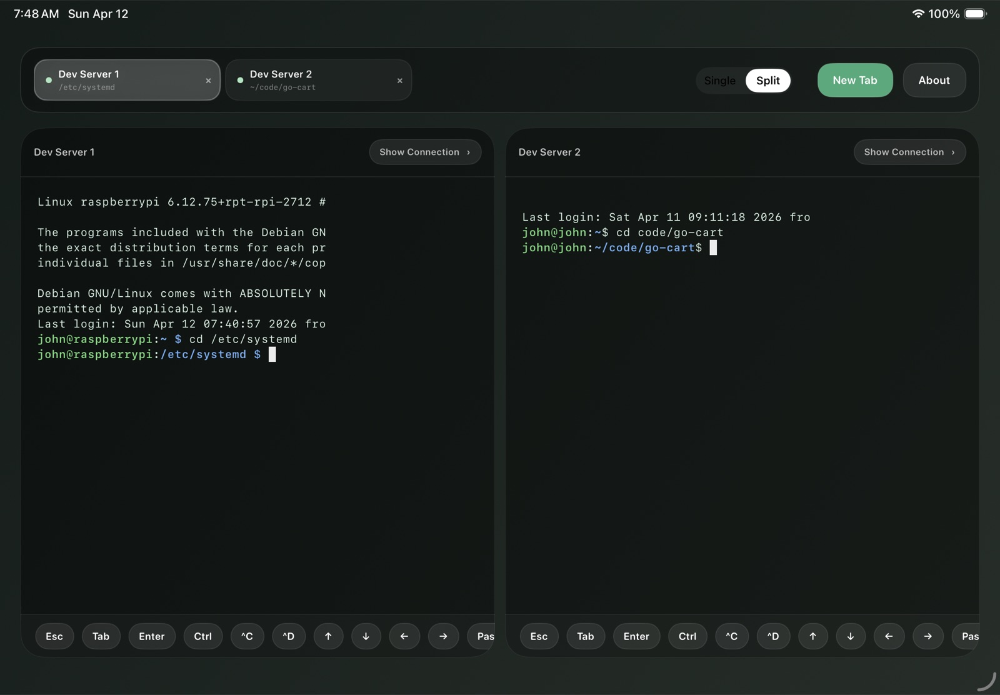

The workspace that replaces the bare terminal.
HQ is an interactive workspace for working with coding agents — live sessions in state-colored panels, full-text search over everything ever run, and real two-way control of the agents themselves. Localhost-only, built over Claude Code.
$ npm i -g @nysgpt/hq
npx @nysgpt/hq
The terminal is a great runtime and a terrible workspace.
Sessions scroll away, cost is invisible, and yesterday's answer is unfindable. Claude Code already writes everything to disk — transcripts, usage, memory, teams, your git history. HQ reads those files and turns them into an operator console. Claude Code is the writer; HQ is the reader. The disk is the database.
- Terminal, protected center — every session live, mounted once; panels orbit it and yield to it
- State-colored panels — each one a dashed box wearing its own source file as a click-to-copy chip
- Search everything — transcripts, memory, notes, source. If Claude wrote it to disk, it's findable
- Drag & drop — components drop their file path straight into the prompt
- Spawn & drive sessions — a persistent daemon holds warm processes that outlive the server
- Two-way channels — push into a live session; replies and permission prompts come back
- Teams — rosters, inter-agent mailboxes, tmux panes read and driven in place
- Permission relay — approve tool calls from the dashboard, policy-checked
- Tokens & dollars — per session, per turn, with caching savings
- Guardrails — weekly caps and a live $/min burn alarm
- Real telemetry — HQ is its own OTLP receiver; no collector to run
- Sweep-or-keep — nothing ages out silently; swept sessions stay searchable
- Backstop — a local LLM gateway in the request path from session birth
- Hit the usage wall? Flip every live session onto AWS Bedrock mid-conversation
- No restart, no lost context — and fail-open by contract: broken backstop, unbroken session
- Private by design — the passthrough never inspects a request or response body
The same disk, everywhere you work.


A dev server, a self-contained offline build, and a native macOS app with a global hotkey — all reading the same local files. Nothing leaves your machine.